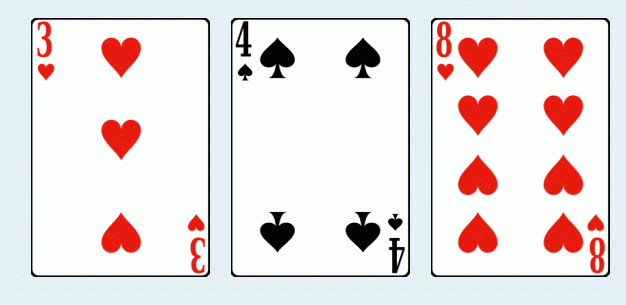

There will be at most 20 test cases, each with two integers n and k (1<=n<=10 , 1<=k<=10). The input is terminated by
n=k=0.
I have a set of super poker cards, consisting of an infinite number of cards. For each positive integer p, there are exactly
four cards whose value is p: Spade(S), Heart(H), Club(C) and Diamond(D). There are no cards of other values.
Given two positive integers n and k, how many ways can you pick up at most k cards whose values sum to n? For
example, if n=15 and k=3, one way is 3H + 4S + 8H, shown below:

There will be at most 20 test cases, each with two integers n and k (1<=n<=10 , 1<=k<=10). The input is terminated by
n=k=0.
For each test case, print the number of ways, modulo 1,000,000,009.
2 1
2 2
2 3
50 5
0 0
4
10
10
1823966 湖南省第七届大学生程序设计大赛